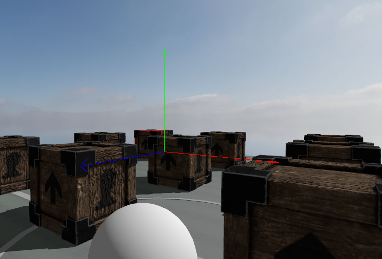
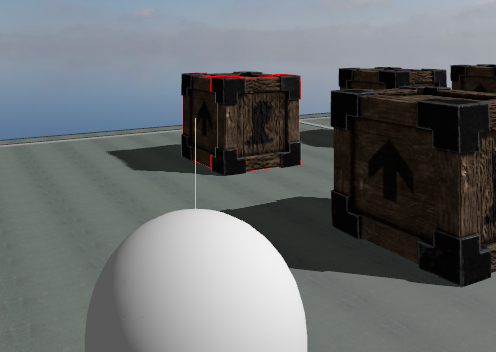
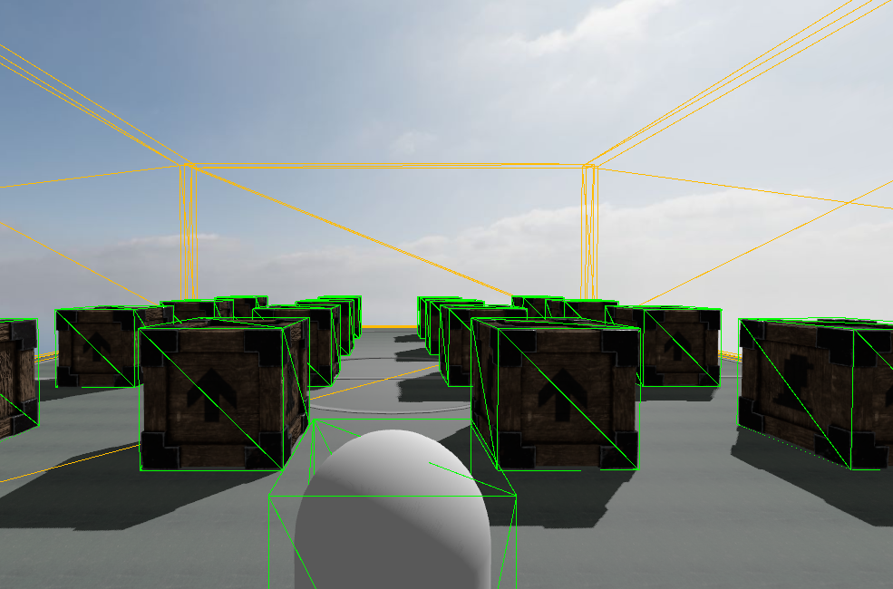

- Generated on jeu. déc. 5 2024 11:22:20 for ZeroZero by
 1.7.0
1.7.0
|
ZeroZero
v0.0
An experimental 3D Engine
|
The in-game debug is automatically added to the rendering system if the z0::ApplicationConfig::debug field of the application configuration is true. It uses the z0::ApplicationConfig::debugConfig field as configuration.
To avoid too much loss in performance during debugging phase the debug information to display are not updated each frame but only when z0::DebugConfig::updateDelay has passed.
The default configuration only displays the collision shapes of all collision objects.
The in-game debug can display various information about the physic system and, except for the ray casts, uses the Jolt Physics debug system.
Examples of debug display :
The coordinate system

The rays of all the ray casts

The collision shapes of all the collision objects nodes

1.7.0